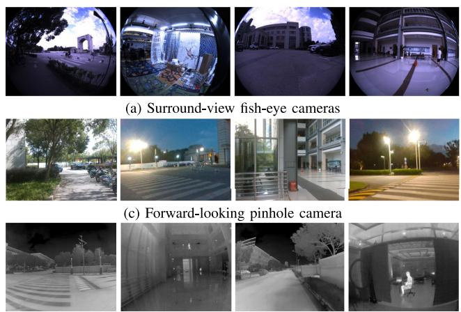
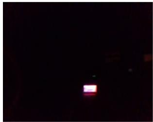
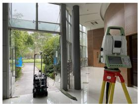

阶段 I · 数据集与评测 / Lesson 0182
M2DGR（2022）：地面机器人的致命场景
它是一把什么样的尺子？——面向地面机器人的「全传感器套餐」数据集，用动捕 / 激光跟踪仪 / RTK 三套真值按场景切换，专挑电梯、全黑、室内外切换这些现实里最要命的情形。🤖 这一课的核心是：同一份数据集里，不同序列的真值精度根本不一样，不能笼统说「M2DGR 是毫米级」。
🎯 主题：地面机器人多传感器 SLAM 的分段真值基准
👥 作者：国内高校团队（正文未标注发表处）
📅 年份 · M2DGR: A Multi-Sensor and Multi-Scenario SLAM Dataset for Ground Robots
本节目标 读完你应该能：说清 M2DGR 为什么用「三套真值源按场景切换」而不是统一一把尺；背出三套设备的精度数字（动捕 1 mm / 激光跟踪仪 1 mm+1.5 ppm / RTK 2 cm）；解释为什么「M2DGR 的真值是毫米级」这句话是错的；用连环画复述电梯、全黑、室内外切换三类致命场景；判断它适不适合你的任务。
和前面课程怎么接 ★ 0180 TUM 定义了 ATE，M2DGR 直接沿用 TUM 的 ATE（用 EVO 工具算），本课会点明「它没发明新指标」。★ 第四季 0073 说 KITTI 用 RTK-GPS 厘米级——M2DGR 户外段同样是 RTK，正可对照「同一精度来源、不同平台」。★ 第一季 0013 警告的评测口径问题，在这里变成现实：同一数据集里真值精度随场景跳变 ，比之前必须说明用的是哪段。★ 第八季 0153–0158 讲动态/退化环境评测，这里电梯金属屏蔽、全黑正是极端退化，可互参。★ 0175 VECtor 同样走「讲清测什么、真值多准、何时该用」的写法。
1. 一句话定位：一把「分段」的尺子
大多数数据集给你一把统一的尺（比如 TUM 全程动捕、KITTI 全程 RTK）。M2DGR 不一样：它是面向地面机器人 的数据集，平台是轮式/履带小车，塞满了相机、激光、IMU、GNSS、轮式里程计等「全家桶」传感器。它最特别的地方在真值：不勉强用一套设备覆盖所有场景，而是按场景换三套真值源 ——室内用动捕、过门用激光跟踪仪、户外用 RTK。
生活类比：你想给一个快递机器人做「全场景考试」，但考场有室内仓库、有电梯、有室外马路。你不会用同一把尺量所有考场——仓库里架动捕相机最准，电梯里金属屏蔽只能用跟踪仪盯着，马路上得靠卫星。M2DGR 就是把这三把尺按考场发下去。
2. 它长什么样：地面机器人与传感器清单
平台是三层地面机器人 （顶/中/底分层装传感器），速度不快，但传感器极全：Velodyne VLP-32C（32 线激光）、6 鱼眼 + 1 天顶彩色相机、红外相机、事件相机、RealSense 深度、IMU、GNSS（Ublox M8T，GPS/北斗）、Xsens RTK/INS。同步方式是软件统一时间戳 （无硬件触发），相机间 < 10 ms，GNSS 仅 1 Hz。
激光 Velodyne VLP-32C，32 线，10 Hz。
视觉全家桶 6 鱼眼 + 1 天顶（FLIR）、红外（Gaode）、事件（DVXplorer）、RealSense D435i。
定位辅助 IMU（Handsfree A9 150 Hz）、GNSS/RTK（Ublox M8T 1 Hz + Xsens Mti 680G）、轮式里程计。

原图注（Fig. 1）： Our dataset for ground robots was captured by a rich suite of sensors within various scenarios. Some sensory data are visualized.怎么看这张图： 这张总览把「机器人身上挂了多少传感器」和「各种场景下的传感数据」一摆出来。盯着看：左上角是机器人本体，右边是同一时刻不同模态的图——彩色、鱼眼、红外、事件、激光。这正是它敢自称「全传感器套餐」的底气，也是它能覆盖致命场景的前提。
3. ★ 真值是怎么来的：三源按场景切换
这是本篇的题眼。它不用同一设备硬扛所有场景 ，而是让真值源跟着场景走（对应论文 Table II / III 的 GT 列）：
纯房间（Room / Roomdark） → Vicon Vero 2.2 动捕 ：12 台相机、50 Hz，机器人贴反光标记点。大厅 / 门 / 电梯（Hall / Door / Lift） → Leica Nova MS60 激光跟踪仪 ：10 Hz，机器人装棱镜反射器，跟踪仪盯着棱镜测位姿。户外（Street / Circle / Gate / Walk） → Xsens Mti 680G RTK/INS ：100 Hz，靠良好卫星可见性输出高精度轨迹。
换句话说，同一份数据集里，真值精度是随场景跳变的 ——它不是一把统一的尺，而是一抽屉尺，按考场发。这一点决定了你引用 M2DGR 真值时，必须说清「这段用的是哪套」 。
真值三源切换：同一数据集，精度随场景跳变
不是一把统一尺，而是按考场发三把——引用时必须说明用的是哪段
纯房间（室内）
Vicon Vero 2.2 动捕
12 台红外相机
50 Hz 三角测量
机器人贴反光点
精度 1 mm
（局部化精度）
场景：Room / Roomdark
天花板架相机
适合小房高精度
空间小、精度高
门 / 大厅 / 电梯
Leica Nova MS60 跟踪仪
激光跟踪仪
10 Hz 盯棱镜
机器人装棱镜反射器
1 mm + 1.5 ppm
（ppm = 每百万分之一）
场景：Hall / Door / Lift
需通视棱镜 + 盯棱镜
电梯里也能跟
过渡段专用
户外（马路）
Xsens Mti 680G RTK/INS
RTK 接收机
100 Hz 融合 INS
需良好卫星可见
约 2 cm
（RTK 固定解）
场景：Street/Circle/Gate
要抬头看天
树下 / 峡谷失效
大空间可用
⚠ 不能笼统说「M2DGR 真值是毫米级」
室内段 = 毫米；户外段 = 2 cm。精度随场景跳变，比之前先说清用的是哪段。
切换原因：每套都有物理前提（架相机 / 通视棱镜 / 看天）
这张图在画什么： 三个并列的「考场卡片」——纯房间用 Vicon 动捕（1 mm）、门/大厅/电梯用 Leica 激光跟踪仪（1 mm + 1.5 ppm）、户外用 Xsens RTK（约 2 cm）。每张卡片写了设备、原理和对应场景。底部红字警告「不能笼统说 M2DGR 是毫米级」。怎么看这张图： ① 精度是分段的 ：室内毫米、户外两厘米，差了一档；② 切换的原因是物理限制 ——动捕要架相机、跟踪仪要通视棱镜、RTK 要看天；③ 所以引用 M2DGR 真值时必须说明序列属于哪类 ，否则数字不可比。要记住的一句话： 同一数据集、不同序列、不同精度——这是 M2DGR 最该被记住的设计哲学。
4. ★ 真值精度是多少：分场景，别一概而论
把三套设备的规格摊开（论文 Table II）：
动捕 Vicon 局部化精度 1 mm 。室内纯房间段，最接近「金标准」。
激光跟踪仪 Leica 1 mm + 1.5 ppm （ppm = 每百万分之一，即每米多 1.5 微米，长距离才显现）。门/大厅/电梯段。
RTK / INS Xsens RTK 固定解约 2 cm 。户外段，依赖卫星。
所以「M2DGR 真值是毫米级」是错的。 只有室内段（Room / Roomdark）和过门段（跟踪仪）到毫米；户外段是 2 cm（厘米级）。论文也自承「不同真值源精度不一」。评测某方法时，如果你拿户外段（RTK 2 cm）去和 TUM 室内段（动捕 <1 mm）比 ATE，那是在拿不同精度的尺互比——第一季 0013 警告过的坑，在这里变成现实。
诚实标注：论文 Table III 的 GT 列原文有 OCR 笔误「RTk/INS」，应为「RTK/INS」；Table IV「Hal105」应为「Hall05」。本课已按规范更正。
三套真值源共同的特点是：每一套都有自己的物理前提 。动捕要提前在房间里架好相机，跟踪仪要求机器人身上那个棱镜始终被通视 ，RTK 则要求机器人头顶看得见足够的卫星 。理解这三条前提，你就明白为什么不可能用一套设备通吃——也明白为什么引用它的数字时必须先说清是哪一段。
RTK 真值的物理前提：头顶必须看得见天空
M2DGR 户外段靠 RTK/INS（约 2 cm）；一旦进室内、树下或城市峡谷，它就失效
① 户外开阔地：抬头看得见天
S1
S2
S3
S4
GNSS 卫星：可见颗数多
几何分布好 · 无多径
地面机器人
GNSS 天线
三层地面机器人
VLP-32C + IMU
RTK 固定解 ≈ 2 cm
开阔地 · 视野无遮挡
② 室内 / 树下 / 城市峡谷
建筑
金属屋面遮挡
信号多次反射
可见卫星不足
树冠遮挡
天线看不见天
RTK 失效 / 只剩惯导推算
红色叉号：天线被遮挡
RTK ＝ 基站 + 流动站，靠卫星载波相位差分求解 → 固定解约 2 cm
前提：卫星颗数够、几何分布好、没有多径
室内金属屏蔽 / 树下 / 城市峡谷 → 失锁，退化到米级
最挑场景的一把尺
只有户外段能用
帧率仅 1 Hz · 易受多径
所以室内必须换尺
这张图在画什么： 左右两联对照。左联是户外开阔地：机器人顶上一根 GNSS 天线，头顶四颗卫星（S1–S4）都能看到，虚线是信号，标注「RTK 固定解 ≈ 2 cm」。右联是室内 / 树下 / 城市峡谷：金属建筑、树冠挡住天空，天线处画了一个红色叉号，标注「RTK 失效 / 只剩惯导推算」。下方横条解释 RTK 的原理与「天空可见」这个前提。怎么看这张图： ① RTK 靠的是卫星载波相位差分 ，没有卫星就没有差分，也就没有厘米级；② 它的精度前提是「看得见天」 ——金属屋面、树冠、城市峡谷都会让卫星失锁或产生多径；③ 所以 M2DGR 只在户外段用它，室内段必须换动捕或激光跟踪仪，这正是「按场景换尺」的根本原因。要记住的一句话： 真值设备的物理前提决定了它能用在哪些场景——RTK 的前提就是抬头看得见天空。
5. ★ 覆盖哪些场景：专挑「致命情形」
共 36 条序列 （约 1 TB），场景设计得「专挑现实里最要命的」：Street(10)、Circle(2)、Gate(3)、Walk(1)、Hall(5)、Door(2)、Lift(4)、Room(3)、Roomdark(6)。代表性退化/特殊场景：全黑（Roomdark，红外可工作）、长走廊、开阔地、电梯跨层（Lift，1 楼→2 楼）、室内外经门切换（Door） 。规模 13688 s、10708.67 m、1220.6 GB。
这类「地面机器人现实场景」恰恰是大多数数据集回避的。下面用连环画把三类致命情形画出来。
致命场景连环画：电梯 / 全黑 / 室内外切换
大多数数据集回避的现实情形，这里专挑来逼 SLAM 现原形
① 电梯跨层
金属厢体
1 楼 ↓ 2 楼
无 GNSS
金属屏蔽
IMU 预积分失配
LIO-SAM ATE=1247 m
教科书级灾难
② 全黑房间
RGB：一片黑
红外相机反而能取特征
但平整窗帘 = 无纹理
普通 RGB SLAM：直接失败
热红外 ORB3：0.404 m
Roomdark 共 6 条
③ 室内外经门
室内
室外
光照剧变
GNSS 进出门跳变
曝光 / 白平衡重置
Door 共 2 条
门是天然退化边界
电梯：金属屏蔽 + IMU 预积分失配
全黑：红外取特征，RGB 直接失效
经门：光照 / GNSS 双重剧变边界
要记住：电梯/全黑/室内外切换 是现实机器人天天撞、多数基准却绕开的坑
论文原话：现有 SOTA 在这几类场景「部分表现差」——数据有效，但方法远未解决
这张图在画什么： 三格连环画。① 电梯：金属厢体里机器人从 1 楼下到 2 楼，标注「无 GNSS、金属屏蔽」，并点出 LIO-SAM 在 Lift04 上 ATE 飙到 1247 m；② 全黑：左半黑屏写「RGB 一片黑」，右半用红点表示红外能取特征，但平整窗帘无纹理；③ 室内外经门：一条虚线门把室内外分开，标注「光照剧变、GNSS 跳变」。怎么看这张图： ① 电梯里卫星信号被金属屏蔽 ，且上下楼时 IMU 预积分与激光里程计失配，导致灾难性漂移；② 全黑下普通 RGB 直接失效 ，但热红外仍能工作（这也是为什么数据集要塞红外/事件相机）；③ 经门切换是光照与 GNSS 的双重剧变 ，是天然退化边界。要记住的一句话： 这些「现实致命场景」恰恰是大多数数据集回避、而地面机器人天天要面对的。

原图注（Fig. 5）： Color image (Left) and Infra-red image (Right) in a complete dark scene.怎么看这张图： 左边彩色图几乎全黑（RGB 相机在 Roomdark 里啥也看不见），右边红外图却能清晰看到结构——这正是上面连环画第②格的「原文证据」。它解释了为什么全黑场景里热红外相机反而比彩色鲁棒，也是 M2DGR 坚持上红外/事件相机的原因。
6. 基准任务与评测协议
M2DGR 是数据集 + benchmark ，指标沿用 TUM 的 ATE （用 EVO 工具先对齐真值再算）。评测对象覆盖视觉 SLAM（ORB-SLAM3 的 Pinhole/Fisheye/Thermal 三种模式、Cubemap、Multicol、VINS-Mono）与激光 SLAM（A-LOAM、LeGO-LOAM、LINS、LIO-SAM），外加 RTKLIB（GNSS SPP）。协议挑了 7 条代表性序列，失败记为 X。
论文 Table V 给了各方法 ATE(m)：A-LOAM 在 Street02=5.299、Street07=28.940、Roomdark06=0.314；LeGO-LOAM 在 Street07=35.437；LIO-SAM 在 Lift04=1247.153（灾难性失败） ；ORB3-Thermal 在 Roomdark06=0.404（红外在全黑有效）；VINS-Mono 在 Street07=143.725。这些数字本身就是「致命场景真的致命」的证据。

原图注（Fig. 3）： (a) trajectories of outdoor sequences; (b) indoor ground truth from a motion-capture system with twelve cameras; (c) a 3D laser tracker tracks the robot through a door; (d) lift sequences — the robot moved in a hall then went to the lift…怎么看这张图： 这张图把「三源真值」的现场摆出来了——(b) 室内 12 相机动捕房、(c) 跟踪仪通过门盯着棱镜、(d) 电梯序列。它和上面那张自绘图一一对应：你看到的每一种设备，都对应一类场景和一种精度。盯着 (d) 想：电梯里既没有动捕也没有好卫星，只能靠跟踪仪盯棱镜。
7. 什么时候该用 / 不该用
✅ 该用 评地面机器人（轮式/履带）的多传感器 SLAM；想测电梯、全黑、室内外切换等现实致命场景 ；需要「室内毫米 + 户外厘米」的分段真值。
❌ 不该用 当「统一毫米级金标准」去横向压别的数据集（它户外只有 2 cm）；评无人机/手持（平台不符）；忽略序列类型直接报一个「M2DGR 精度」。
8. 作者自述的局限
论文自承三点：① 软同步 ，且不同真值源精度不一 ；② 电梯/室内外切换等场景几乎所有被测系统都失败 ，说明数据有效但方法远未解决；③ GNSS 仅室外有效，存在多径/失锁。补充：它指出 OpenLORIS 用激光 SLAM 造真值并不可靠（激光在某些场景误差比视觉还大）——侧面印证「没有一把尺通吃」。
互动判断
论文测出 LIO-SAM 在 Lift04 上 ATE = 1247 m。这代表 LIO-SAM 这个算法「绝对误差 1247 米」吗？
常见误解
正确看法
9. 读完你应该能回答
M2DGR 为什么用「三套真值源」而不是一套？分别对应哪些场景、哪些设备、什么精度？
为什么说「M2DGR 真值是毫米级」这句话是错的？正确说法是什么？
画出三类致命场景（电梯/全黑/室内外切换），并各说一个为什么它们致命。
它的评测指标是什么？和 0180 的 TUM 是什么关系？
LIO-SAM 在 Lift04 上 ATE=1247 m，这个数字该怎么正确理解？
课后练习
把三套真值源按「设备 / 对应场景 / 精度」填成三行，并说明为什么不能合并成一把尺。
展开查看答案 动捕 Vicon（纯房间，1 mm）/ 激光跟踪仪 Leica（门·大厅·电梯，1 mm+1.5 ppm）/ RTK Xsens（户外，约 2 cm）。不能合并，因为每套都有物理前提（架相机、通视棱镜、看天），没有一种能通吃所有场景，所以精度随场景跳变。
为什么「M2DGR 真值是毫米级」会误导人？给出正确的分段表述。
展开查看答案 只有室内段（动捕 1 mm）和过门段（跟踪仪 1 mm+1.5 ppm）到毫米，户外段是 RTK 约 2 cm（厘米级）。正确说法：M2DGR 室内段为毫米级、户外段为厘米级，引用时必须说明序列类型。
全黑场景下，为什么普通 RGB SLAM 失败而热红外仍能工作？用 M2DGR 的数字说明。
展开查看答案 全黑时 RGB 相机接收光强近零、无法提取特征，ORB-SLAM3 普通模式直接失败；红外相机靠热辐射成像，仍能取特征。论文数字：ORB3-Thermal 在 Roomdark06 上 ATE=0.404 m，证明红外在全黑有效（但平整窗帘在热图里仍无纹理）。
把 M2DGR 和 Newer College（0181）、TUM（0180）在「真值来源 + 平台 + 精度档」上做三行对照。
展开查看答案 M2DGR：三源切换，地面机器人，室内毫米/户外厘米；Newer College：测绘扫描仪+ICP，手持步行，约 3 cm；TUM：动捕，手持 Kinect/小车，帧间 <1 mm、全场 <10 mm。三者来源、平台、精度档都不同，不可横比。